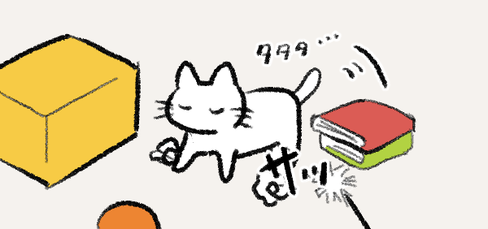
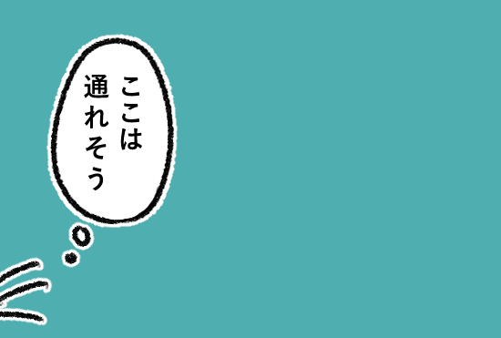
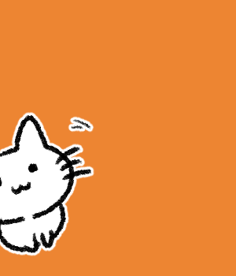
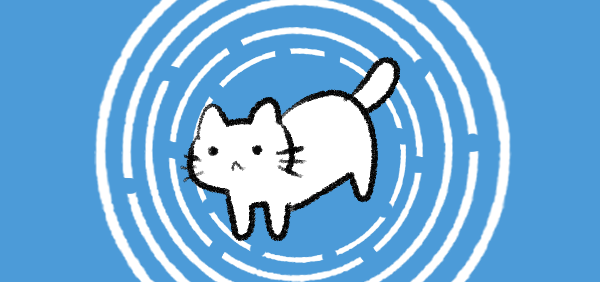
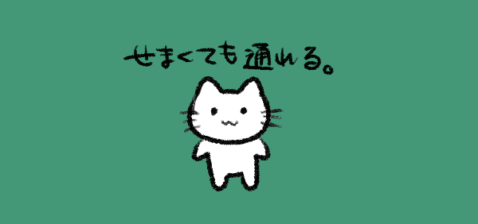
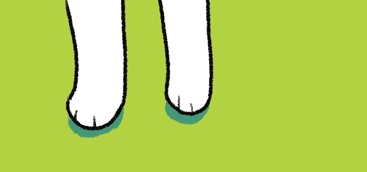
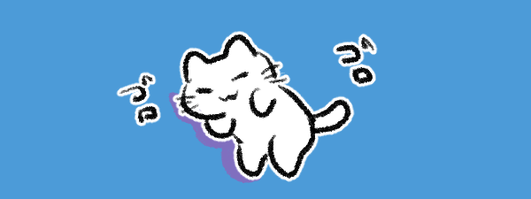

ねこは暗い場所でも、家具の間でもぶつからずにスッと動くことができます。
これは、空間の形や距離を体で感じ取っているからです。

ヒゲは空気の流れの変化を感じとり、「どれくらい近いか」「通れるかどうか」を判断しています。

ねこのヒゲは、とても敏感なセンサー。

また、ヒゲだけでなく、体の毛や皮ふも空気の動きや風の流れを感じ取っています。

少しの風の変化から、「この先は広い」「ここはせまい」といった空間の形を知ることができます。
こうしてねこは、体全体でまわりの空間を“読む”ようにして動いているのです。

目で見て距離をとるだけではなく
体のあちこちで距離を測ることができます。

人が気づかないような小さな空気の流れの変化まで感じ取れるねこは、
私たちが見逃してしまうようなものも感覚として察知できる、スゴ技を持っているんですね。